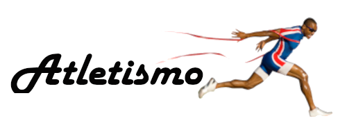

O Fascinante Mundo do Atletismo: Mais do que Corridas e Saltos
O atletismo, muitas vezes denominado como a "mãe dos esportes", é uma das práticas mais antigas e variadas, que englobam uma série de atividades físicas. Este esporte não só testa os limites do corpo humano, mas também celebra a habilidade atlética em sua forma mais pura. Vamos nos aprofundar nas diferentes modalidades do atletismo, seu desenvolvimento histórico, a importância das competições internacionais e como ele continua a evoluir.
Origens e Desenvolvimento Histórico
O atletismo tem suas raízes em práticas que datam de milhares de anos, com registros que remontam a civilizações antigas. Os Jogos Olímpicos da Antiguidade, realizados pela primeira vez em Olímpia, na Grécia, em 776 a.C., foram o marco inicial das competições de atletismo. Nessas primeiras competições, o evento mais prestigioso era o Stadion, uma corrida de cerca de 192 metros. Gradualmente, outras modalidades, como o pentatlo (composto por corrida, salto em distância, lançamento de disco, lançamento de dardo e luta), foram introduzidas.
Na era moderna, o ressurgimento dos Jogos Olímpicos, em 1896, por Pierre de Coubertin, trouxe o atletismo de volta ao centro das atenções globais. Com o tempo, novas modalidades foram adicionadas, refletindo o avanço técnico e científico, bem como a inclusão de atletas de diversas origens.
Importância das Competições e Recordes
As competições de atletismo são centrais nos Jogos Olímpicos e em outros campeonatos mundiais. Elas não só promovem a excelência esportiva, mas também a camaradagem e a paz internacional. Os recordes mundiais em atletismo são uma celebração dos limites humanos sendo quebrados. Atletas como Usain Bolt, com seus recordes nos 100m e 200m, e Eliud Kipchoge, com seu tempo de maratona de sub-2 horas, se tornaram ícones globais.
Evolução e Inclusão
O atletismo continua a evoluir com a inclusão de novas tecnologias e métodos de treinamento. Além disso, há um crescente reconhecimento da importância da inclusão de atletas de todas as origens e habilidades. O movimento para tornar o esporte mais acessível e justo é evidente na inclusão de categorias para atletas paralímpicos e a crescente presença de mulheres em todas as modalidades.
Conclusão
O atletismo é mais do que um esporte; é uma manifestação dos valores humanos de esforço, resiliência e busca pela excelência. Ele conecta o presente com o passado, homenageando tradições antigas enquanto abraça inovações modernas. Seja como atleta, treinador ou fã, o atletismo oferece uma arena para explorar o potencial humano e inspirar futuras gerações.
Conheça atletas que marcaram a história do Atletismo:
Jesse Owens
Homem negro que ganhou várias medalhas na Alemanha Nazista na presença do próprio Hitler.
Usain Bolt
O Jamaicano que quebrou vários recordes e virou refência mundial e serve de inspiração até hoje.
Adhemar Ferreira
Brasileiro medalhista de ouro em duas edições das Olimpíadas na modalidade Salto Triplo.